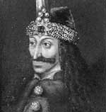

Prens 3. Vlad (1431-1476), Osmanlılar’ın Eflak’ı işgalini geri püskütmüştür. Bu başarısı nedeniyle günümüzde Romanya’da bir halk kahramanı olarak görülmektedir. Diğer taraftan, düşmanlarına karşı kullandığı sadist cezalandırma teknikleri ve kötü bir nam salmış olan lakabı ile tanınmaktadır: Drakula.

Bram Stoker’ın (1847-1912) kurgusal vampirinin tarihsel isim babası olan prens, aynı zamanda Kazıklı Voyvoda ve Vlad Tepeş isimleri ile de tanınmaktadır. Transilvanya’da doğmuştur. Düşmanlarından kurtulmak için tercih ettiği yöntemlerin başında onları kazığa oturtmak geliyordu. Bir günde toplam bin kişiyi kazığa oturttuğu söylenmektedir. Söylendiğine göre kıvranan bedenlerin ortasında bir ziyafet vermişti.
Vlad, Prens 2. Vlad’ın (1390-1447) oğluydu. Genç Vlad’ın soyadı olan Drakula, Latince ejder anlamına gelen draco kelimesinden türetilmiştir. Vlad’ın babası Osmanlı istilasına karşı Kutsal Roma İmparatorluğu’nu korumak için kurulmuş bir tarikat olan “Dragonlar”a üye olduğundan bu lakabı almıştır. Eflak, Osmanlılarla yapılan savaşın tam da göbeğindeydi. 3. Vlad hayatının büyük bir bölümünü Osmanlı sultanı ile mücadeleye adadı.
1447 yılında Vlad’ın babası ve büyük ağabeyi, Eflak asilzadeleri tarafından öldürüldüler. Bu olaydan sonra prensliğin kontrolünü sağlayabilmek için dokuz yıl boyunca bir dizi savaş yaptı. Bu savaşlarda gösterdiği tavır onun gaddar bir kişi olarak isim salmasına neden oldu. 1456 yılında gücü tam olarak eline aldı. Babasının ölümünün öcünü almak için neredeyse Eflak’ın bütün asillerini kazığa oturttu.
Bu arada 1453 yılında Türkler, Constantinople’ü fethedip, Avrupa’nın kapısına bir ordu yığdılar. Sultan 1462 yılında Eflak’ı işgal etti. Vlad, onu dehşet verici bir manzarayla karşıladı. Yirmi bin Osmanlı savaş esirini sonraki işgalcilere bir uyarı olarak kazığa oturtmuştu. İstila geri püskürtüldü. Ne var ki Vlad aynı yıl küçük kardeşi Yakışıklı Radu (1439-1475) tarafından azledildi. Sonraki on iki yıl boyunca zindanda kaldı. 1476 yılında yeniden başa geçmiş olsa da aynı yılın sonlarına doğru Türkler tarafından kırk beş yaşında öldürüldü.
Yaklaşık 400 yıl sonra İrlandalı yazar Bram Stoker (1847-1912) Doğu Avrupa’nın geleneksel vampir folklorünü kendi öyküsüyle kombine edip kurgusal “Kont Drakula” karakterini yarattı. Roman ve daha sonra çekilen sinema uyarlamaları, Eflaklı prensin adının zalimlik ve işkence ile özdeşleşmesine neden oldu.
Ek Bilgiler
1- Vlad’ın oğlu Kötü Mihnea (1462-1510), babasının ölümünün ardından tahta çıktı. Adının da ima ettiği gibi, babasından daha ılımlı ya da nazik değildi. Düşmanlarını, burunlarını keserek cezalandırdığı söylenmektedir.
2- Transilvanya’daki Vlad’ın doğum yerinin yakınlarında, vampir temalı bir eğlence merkezi kurulması planı 2002 yılında iptal edildi.
3- Ölümünün ardından Vlad, Snagov Adası’ndaki gizli bir mezarlığa defnedildi. 1931 yılında mezarı açıldı. Söylendiğine göre mezar boştu.